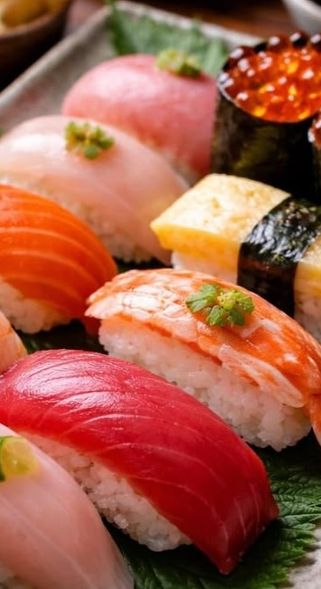

Japanese cuisine—known as *Washoku*—is renowned for its fresh seafood dishes (a hallmark of an island nation), vast variety, use of seasonal ingredients, and beautiful presentation. Rice, fish, vegetables, and soy products are staples of the cuisine. Sushi is one of Japan's most famous dishes. It typically consists of vinegared rice paired with raw seafood or vegetables. There are many varieties, such as *nigiri* (hand-pressed sushi) and *maki* (rolled sushi). Sushi has existed for over 200 years; originally, it was said to be about the size of a modern *onigiri* rice ball (roughly the size of a fist).
Sweets Japan has traditional confections known as *wagashi*. Originally intended to be enjoyed alongside the matcha served in tea ceremonies, these sweets place great importance on beautiful aesthetics—mimicking seasonal flowers, for example—so they can be appreciated visually as well as for their taste.
Dashi (Stock) Although not widely known outside Japan, *dashi* is an essential traditional soup stock in Japanese cuisine. Primarily made from ingredients like kombu (kelp) and katsuobushi (dried bonito flakes), it adds a rich *umami* flavor to dishes. (To be honest, I struggled to find it when cooking Japanese food in New Zealand. It is an absolute essential—right up there with salt and sugar!) It is used in a wide range of dishes, including miso soup, udon noodles, and simmered dishes (*nimono*). While the flavor of the stock itself is relatively mild, it plays a key role in enhancing the deliciousness of other ingredients.
Fun Fact! *Umami* is considered the "fifth basic taste," alongside sweet, sour, salty, and bitter. *Dashi* is crucial for creating the unique *umami* flavor characteristic of Japanese cuisine! 🍜Fun Fact 2! Japanese food culture places great value on seasonal ingredients, and many dishes are enjoyed specifically during certain times of the year. 🎌